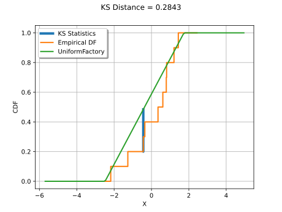
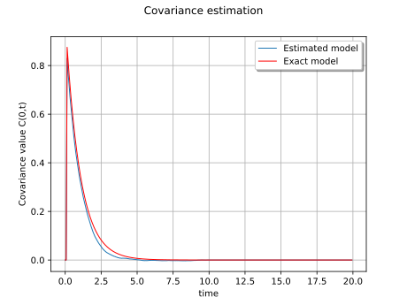
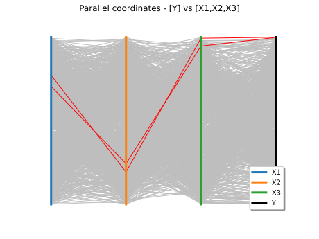

Data analysis¶
Manage data and samples¶


A quick start guide to the Point and Sample classes
A quick start guide to the Point and Sample classes
Sample analysis¶


Estimate quantile confidence intervals from chemical process data
Estimate quantile confidence intervals from chemical process data
Distribution fitting¶


Fitting a distribution with customized maximum likelihood
Fitting a distribution with customized maximum likelihood


Statistical tests¶



Kolmogorov-Smirnov : understand the statistics
Kolmogorov-Smirnov : understand the statistics

Kolmogorov-Smirnov : get the statistics distribution
Kolmogorov-Smirnov : get the statistics distribution
Estimate dependency and copulas¶


Estimate tail dependence coefficients on the wave-surge data
Estimate tail dependence coefficients on the wave-surge data

Estimate tail dependence coefficients on the wind data
Estimate tail dependence coefficients on the wind data
Estimate stochastic processes¶



Estimate a stationary covariance function
Estimate a stationary covariance function
Graphics¶



Visualize sensitivity